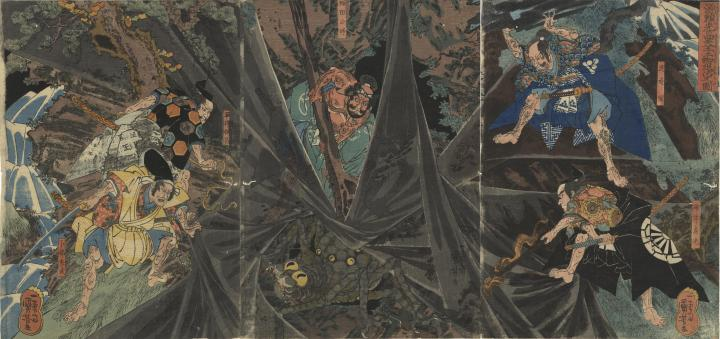

源頼光の部下で四天王といわれた渡辺綱、坂田公時 、碓井貞光、卜部季武、平井（藤原）保昌が土蜘蛛を退治している。
著作者：一勇斎國芳／出典：親書誌：U426_nichibunken_0374：源頼光の四天王土蜘退治之圖；ミナモト ヨリミツ ノ シテンノウ ツチグモ タイジ ノ ズ／日付：2014／資源識別子：U426_nichibunken_0374_0001_0000
Copyright (c)2010- International Research Center for Japanese Studies, Kyoto, Japan. All rights reserved.